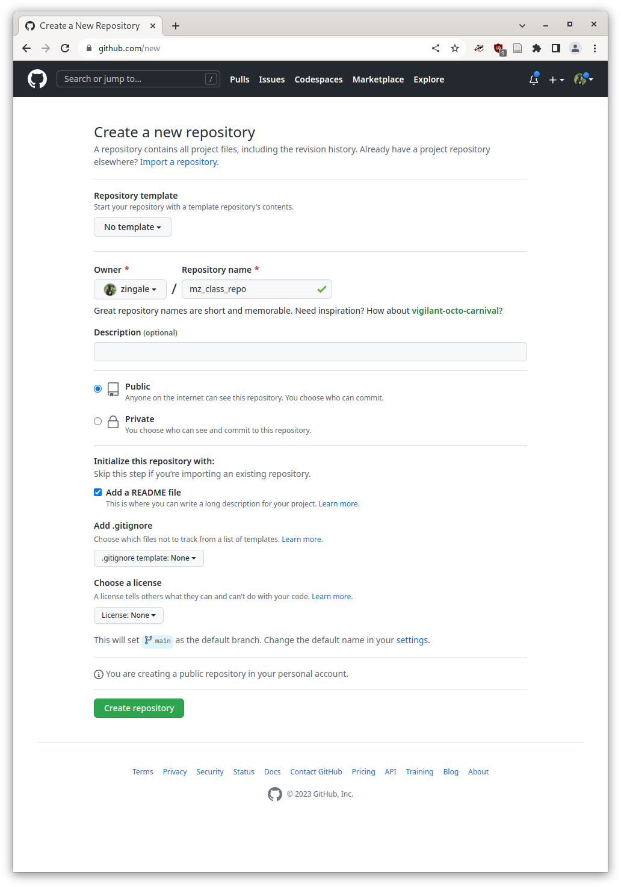

github#
Github provides a web-based way to interact with git repositories. At its heart it hosts a bare repo that we can push-pull to/from, but it also provides features to make it easier for users to request their changes be incorporated.
Creating a repository on github#
Let’s start by creating a new git repository using github’s web interface. Start on your github home page and click on the “+” icon and select “New repository”:

Now we give the repository a name. Let’s use our initials, followed
by _class_repo, so for me, it will be mz_class_repo.
Make sure that it defaults the repo to be public, which means anyone on the internet can see the contents—that’s what we want.
Finally, check the box to add a README file—this means that our repository will
not be empty initially.

Our project is now found at: https://github.com/<username>/<reponame>,
where username is your Github username and reponame is the name of
the repository you just created.
SSH interlude#
Github works best is we communicate via ssh, and it wants
us to upload our public key to github to handle the authentication.
There is some nice documentation describing key pairs in the Software
Carpentry Create an SSH key pair section.
Here’s how we will set things up:
A the bash prompt generate a new key pair:
ssh-keygen -t ed25519The
-toption picks a secure encryption method.It will ask you for a passpharse—just hit Enter to keep it empty (if other people had access to your account, the you would want to pick a passphrase).
If you do
ls -l ~/.sshyou’ll see 2 files:
id_ed25519andid_ed25519.pubthis is the private and public key for encryption.Caution
Never share your private key (
id_ed25519) with anyone.Our public key (
id_ed25519.pub) is meant to be public, and we can give it to places we want to communicate with, like githubGo to you Github profile SSH keys settings: https://github.com/settings/keys
Click on the New SSH key button and:
give a title which is descriptive of the machine you are using, like
laptopcopy and paste the contents of
id_ed25519.pubinto the key text box. You can see the contents by doing:cat ~/.ssh/id_ed25519.pubClick on Add SSH key
Test things out:
ssh -T git@github.comIt will ask you if we want to save the fingerprint—say “yes”, and then it should report:
Hi zingale! You've successfully authenticated, but GitHub does not provide shell access.
That means everything is working.
Working remotely#
Now we can git clone this repo. From the github project page, click on the code button.

Copy the string in the text box there and then on your command line clone the repo as:
git clone git@github.com:zingale/mz_class_repo.git
(replacing my repo and username with your own).
Now we can go into our repo and look around. Notice that there is a
.git/ directory.
We can also see that there are “remotes”:
git remote -v
origin git@github.com:zingale/mz_class_repo.git (fetch)
origin git@github.com:zingale/mz_class_repo.git (push)
This tells us that our local repository is connected to the remote repository
on github, and referred to as origin here.
This means that we call push to github and pull from there.
As a single user, this will allow you to develop from any computer and keep the code base in sync across all of them.
If the project has multiple developers, this can be where all of the developers sync up their projects.
README.md is special#
The web interface that github provides to our repo has a number of features.
First, the README.md file is always displayed on the main project
page. This is where you can put descriptions of what your project is,
how people can contribute, even share the status of testing and
documentation builds (we’ll talk about those later in class).
This file is in github-flavored Markdown
format
(that’s what the .md extension signifies). Markdown allows you to
do basic formatting.
Here’s an example of what you can do in a README.md from one of my
projects: https://github.com/pynucastro/pynucastro